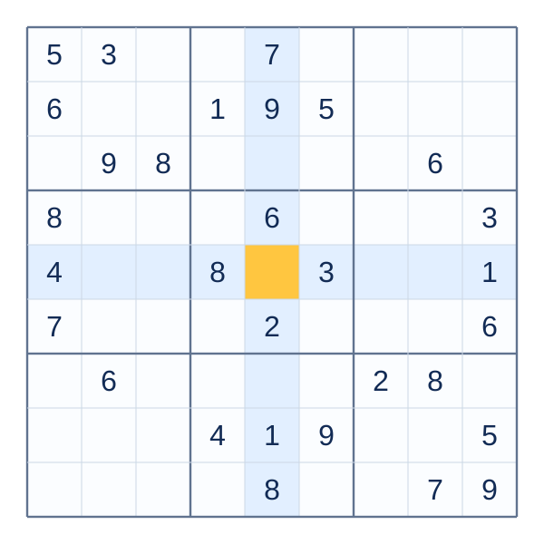

Daily challenges
A fresh puzzle to make a little focus part of your day.
Sudoku for Android · by Salix
A daily challenge. A moment to yourself.
Make room for a little discovery.
Offline play. No account. Your own pace.

A fresh puzzle to make a little focus part of your day.
Keep your games, personal statistics, and streaks close.
Choose a theme and the input style that feels right for you.
Thoughtfully simple
Notes, undo, and hints give you space to work through your next answer. Pick up your saved game whenever you’re ready.
Visit support